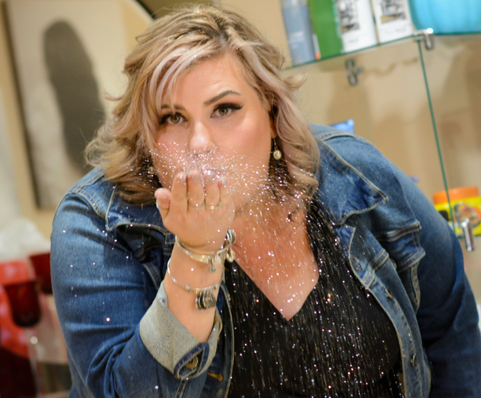
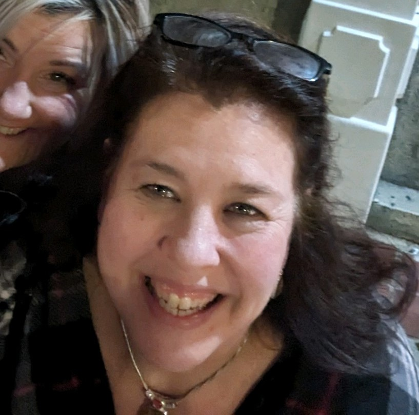

Board of Directors

Vice President: Amy Dowling
Amy Dowling's career spans over 25 years in business and IT. Currently, she serves as a Senior IT Director at a world-renowned global science company. Beyond her technical expertise, Amy is a strong advocate for diversity and inclusion (D&I) initiatives. Her involvement extends to various groups and organizations that champion women in IT and promote D&I within the workplace. Amy also has a history of active community engagement, having co-founded AOK.


Treasurer: Samantha Spezeski
Samantha Spezeski is a successful internal auditor for a highly diverse company in the Boston metropolitan area. Samantha has been an auditor for over 25 years with extensive background in business, audit and finance. She is one of the co-founders of AOK.
Co-Secretary: Kayla Johnson
Kayla is a successful business owner specialising in Esthetician and skincare. She's been in this industry for over 15 years and has been an outstanding influence in the community.

Board Member-At-Large: Ashley Johnson
A seasoned entrepreneur for over 10 years, Ashley has thrived as a hair and makeup artist. Deeply invested in her community, she's also lent her talents to various outreach programs in Manchester.
Director of Outreach and Donations: Kacey Spicer
Kacey is the Events Coordinator for AOK and has been actively engaged with helping create the monthly events, weekly distribution of food drives as well as actively engaging with our community.